AI vision for construction photos
$1M+
Pipeline with Kiewit, Granite, Kahua
50%
Of ENR 400 via SmartPM integration
3,056
Users · 29 customers at POC delivery
90%+
Tag precision validated in testing
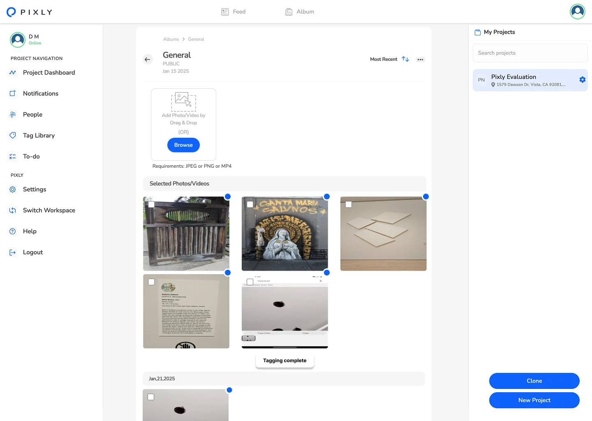


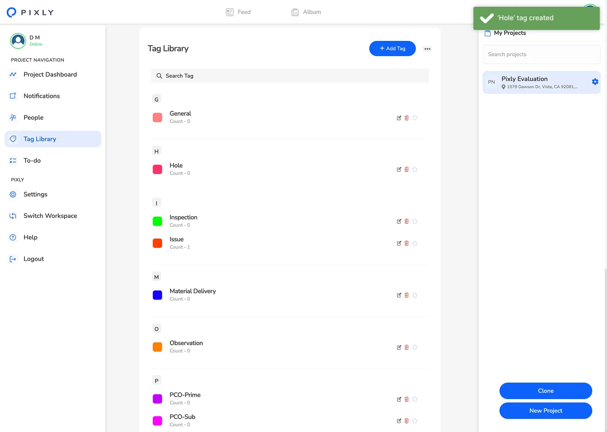
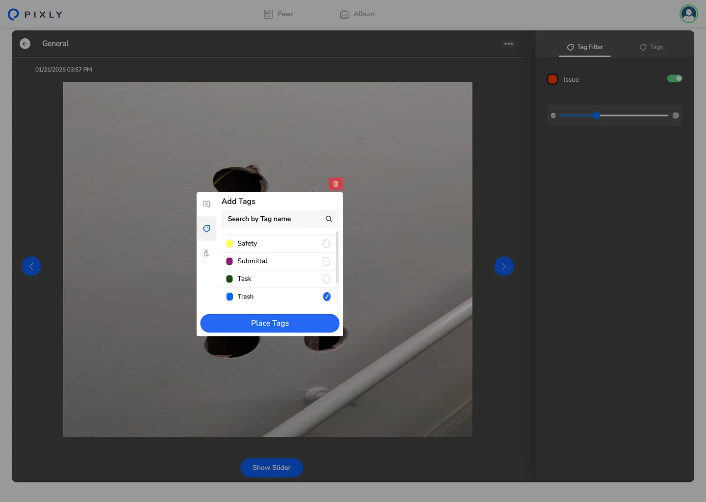


The business problem
Pixly helps construction teams capture jobsite photos. Capture worked. Finding the photo later, not so much.
Field teams take hundreds of photos per project. Photos document safety issues, progress, materials, equipment, and site conditions. Pixly needed to test whether AI-powered tagging and content-based search could make its existing photo library easier to use.
Product showcase
The goal: test whether automatic image tagging and content-based search could help construction teams find project photos faster.
Capture
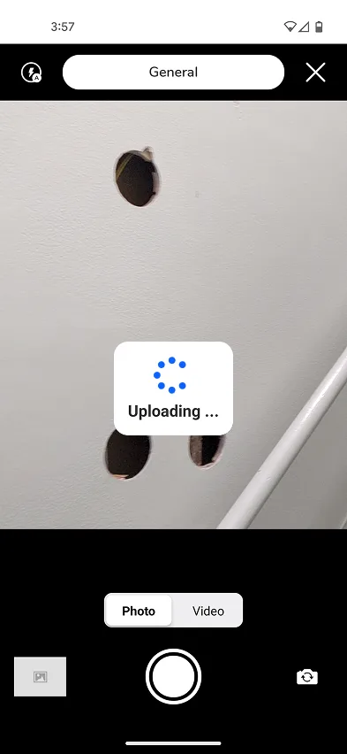
Albums
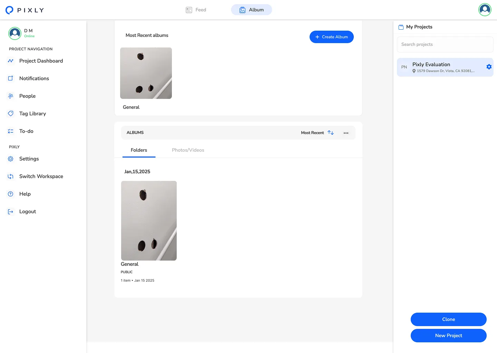
Tags
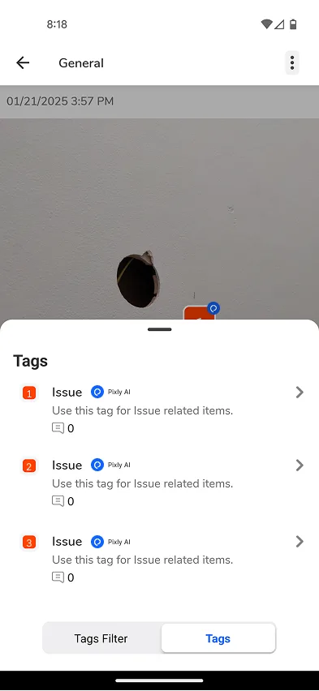
Search

What was at stake
Pixly was becoming a place where teams stored photos but could not retrieve knowledge.
A product like that would be easy to replace and weaken Pixly's position in a market where documentation, proof, and reporting matter.
There was also a product-risk question. AI features can sound compelling in sales conversations but fail when users see wrong or irrelevant results. The work needed to protect trust while proving that automated tagging could improve retrieval in real jobsite conditions.
The three-week timeline raised the delivery risk. Every decision had to serve the central question. Time spent on advanced features would reduce time available to validate whether the core workflow worked.
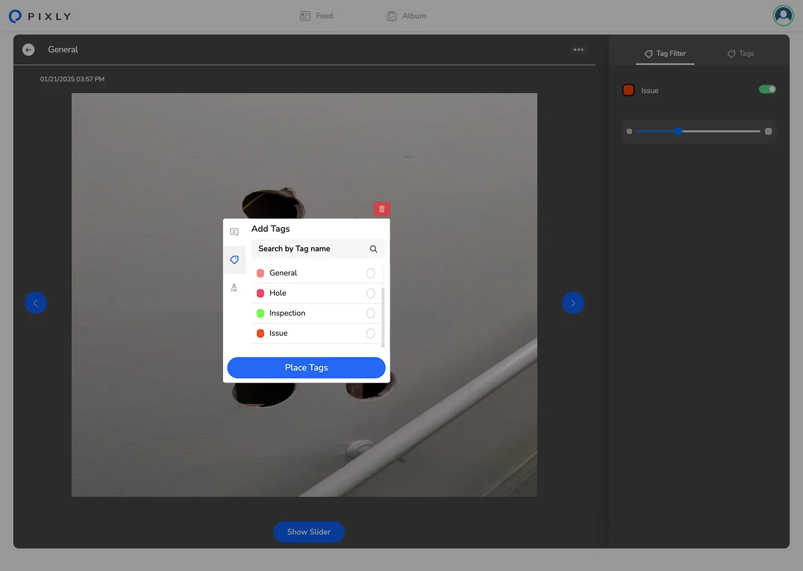
Decisions that mattered
Prove one useful customer outcome first
The team could have treated AI tagging as a broad platform effort. That would mean designing provenance, advanced library management, collaborative tagging, rich faceted navigation, and many possible AI features before learning whether users trusted the basics.
I recommended a narrower first bet: tag photos automatically at capture, map those tags to terms construction teams actually use, and make the results useful in search.
The tradeoff was deliberate. We deferred features that would matter in a mature tagging product so we could answer the first business question quickly: would people use AI-generated tags to find their work?
Design for trust, not just tag accuracy
Computer vision can produce a label even when it is uncertain. Showing every predicted tag would create noisy search results and weaken trust. Hiding too much would reduce the value of the system.
I worked with the team to set an 80% confidence threshold. Tags above that threshold appeared in search results. Tags below it stayed in the index but did not appear until a user confirmed or rejected them.
The tradeoff was recall versus trust. We chose to show fewer results when the model was unsure because one clearly wrong result can damage confidence more than one missing result. This also created a feedback loop. User confirmation could improve the system without making uncertain AI behavior visible as a product failure.
Translate AI labels into field language
The AI could identify objects, but its labels did not always match the words people used on construction sites. A generic label such as “excavating equipment” was technically correct, but a superintendent was more likely to search for “excavator” or “backhoe.”
I owned the vocabulary layer between model output and user behavior. I combined generic image labels with construction-specific labels and created a synonym map that matched the language field users used to describe materials, equipment, and site conditions.
The tradeoff was more work up front. Without it, Pixly could claim technical accuracy while still failing the user's real task: finding photos with the words that came naturally to them.

How I led the work
I began with contextual inquiry across three construction firms.
The research showed two distinct needs. Field users needed to find a specific photo quickly, often from memory. Project managers needed to browse a category of photos across a project, such as concrete work, equipment, or a site condition.
It also showed that chronology was the wrong organizing model. People did not think, “Show me photos from Tuesday.” They thought, “Show me the concrete pour on the east wing,” or “Find all photos of the excavator.”
I used those findings to align the partners around shared product decisions. The AI team had a clear definition of useful labels. The UI team had a clear search model and interaction direction. Pixly had a focused POC that connected technical capability to customer value.
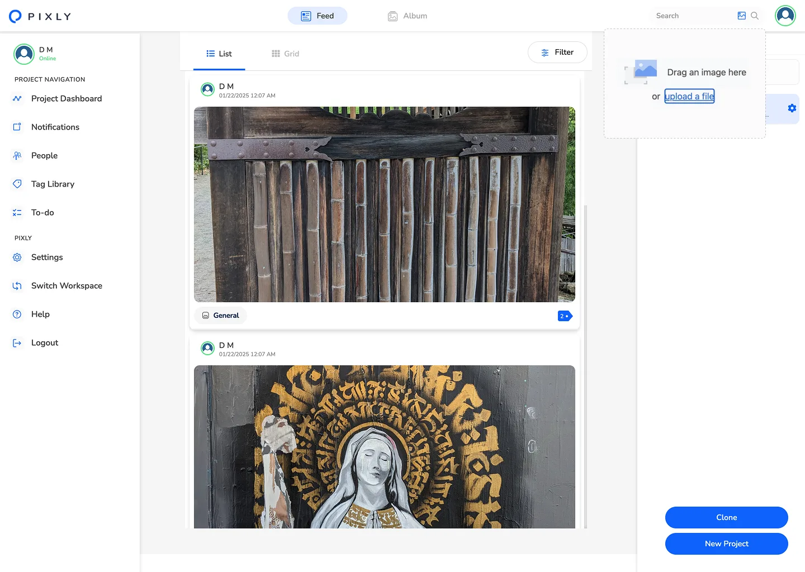
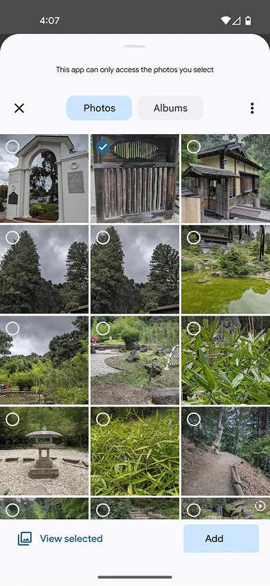
Technical integration
The vocabulary problem I had to own.
AWS Rekognition produces generic object labels. SageMaker custom models produce domain labels—rebar types, concrete conditions, equipment models. The taxonomy had to merge both into one vocabulary that matched how field users actually spoke.
SnapSoft's initial label set didn't map to field vocabulary. “Excavating equipment” isn't what Marcus says; “excavator” and “backhoe” are. Building the synonym map required sitting between ML output and user research—forcing an alignment neither party was initially scoping for.

What I would change
The AI and UX work began with too much asynchronous back-and-forth on taxonomy decisions.
Bringing the ML and UX teams together during the first sprint would have reduced a lost week and produced faster alignment.
That experience reinforced a principle I use in AI product work: model quality and product meaning cannot be designed in isolation. The technology may identify an object, but the product still has to decide what it means, when to show it, and whether users can trust it.
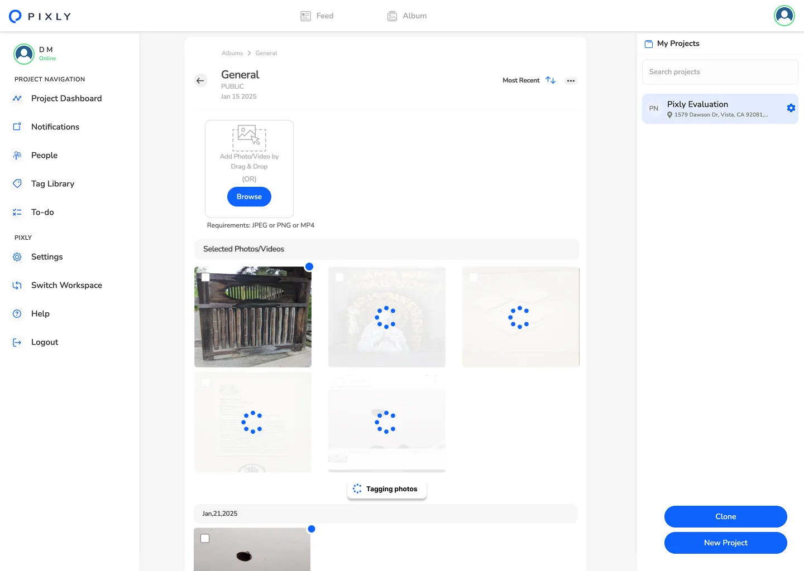
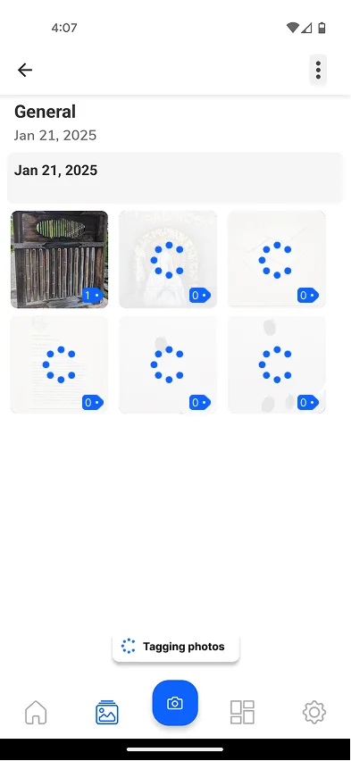
What this demonstrates
I choose small, credible bets that prove concepts.
I don't go all in until the concept is proven. When I do I make sure to lead across research, interaction design, and partner alignment. I did not own the ML pipeline or the visual UI team for this engagement but I did own the decisions that connected those moving parts to a clear customer outcome.
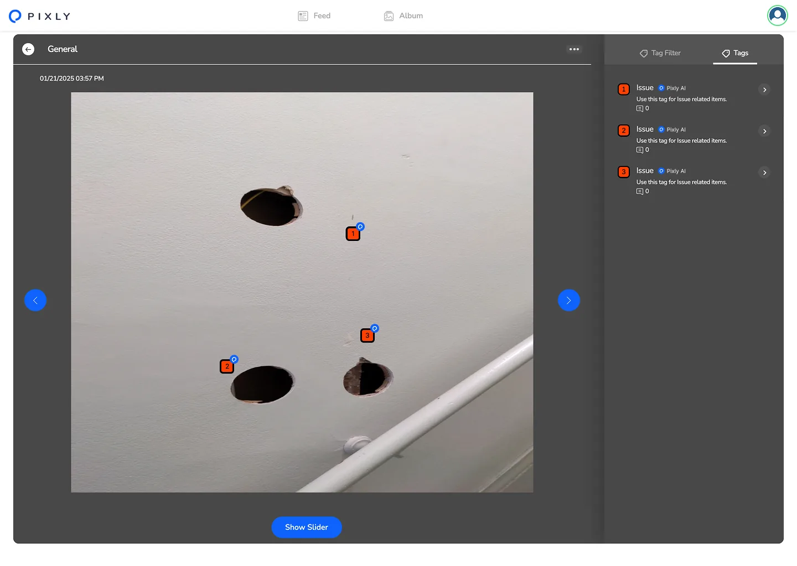
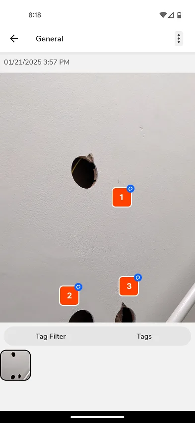

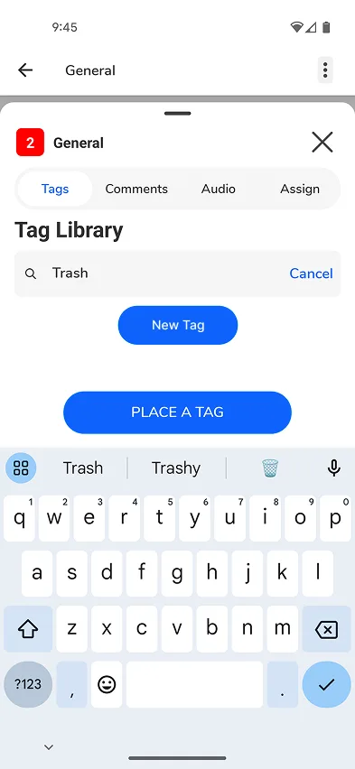
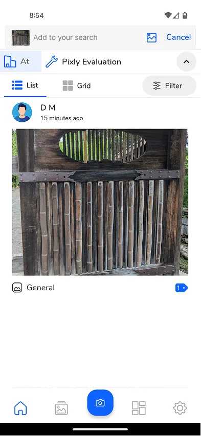
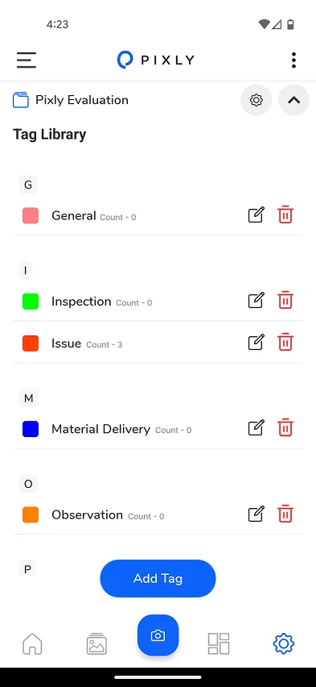
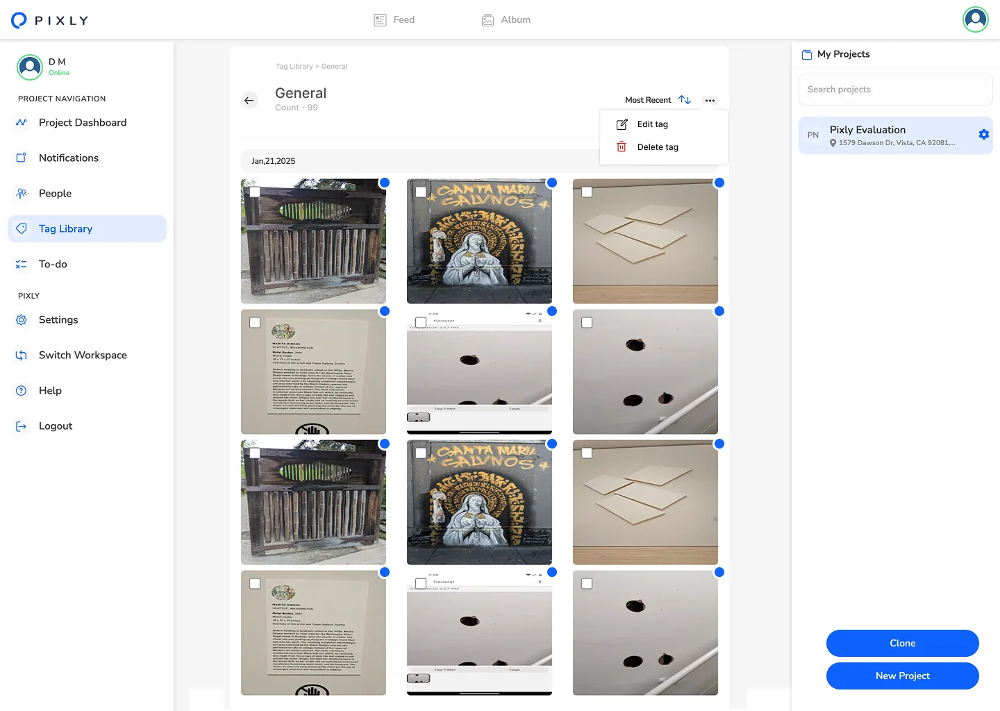
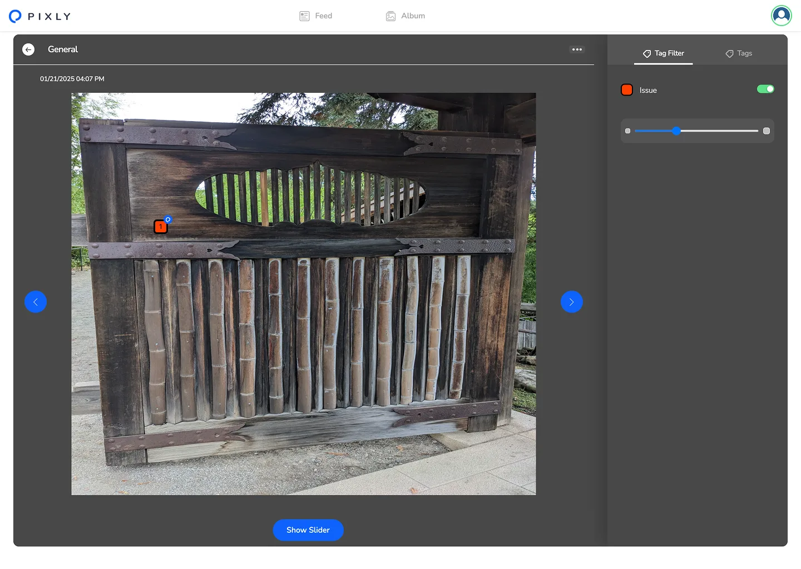
Impact
“Pixly saves us time and resources and has streamlined our photo documentation process. It's an absolute game-changer!”
Tim Van Hook Director of Learning & Development, Kitchen Saver
Tag accuracy validated above 90% precision during the AWS-funded POC. The path to full deployment is open—with $1M+ pipeline unlocked with Kiewit, Granite, and Kahua.
Your rivals expect you to sleep on your UX. They thrive on what you ignore. Prove them wrong
Next project
Ethics review. Salesforce. 80 NPS.
Infrastructure for Legal Tech
NPS 80

Keep scrolling
Continue to Open Door Legal